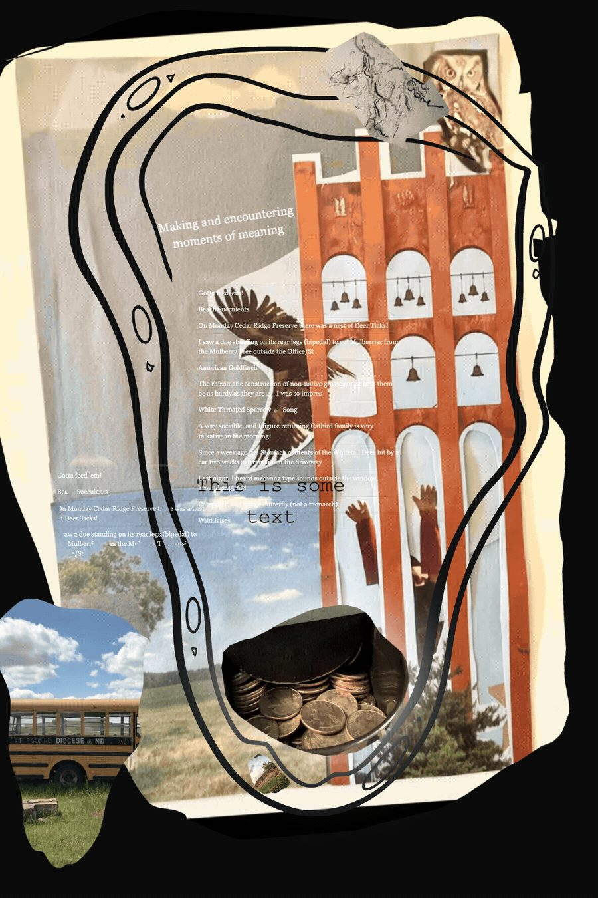

Lead · Sat, Jul 4
CinemaCollage
Moving Pictures
It's collage. It's cinema. It's phtoography. It's knowledge stored and encountered.
Read the piece →
It's collage. It's cinema. It's phtoography. It's knowledge stored and encountered.
Read the piece →
Here we go. It is Sat Jul 4 16:46 and I am in Thymer, while also, writing my first blog post. To my website.
This is a sample post — edit it, or delete it.